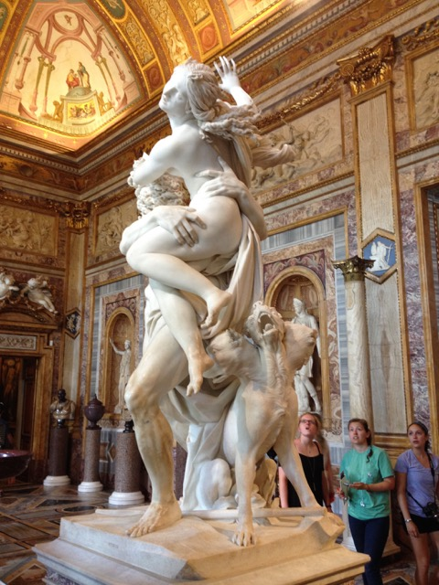

Visiting The Villa Giulia was a rather pleasant and calming experience. It is the kind of place that would be perfect for a garden party for a few friends, or a place to retreat to with a significant other. The villa is structured so that visitors will naturally walk around the periphery, which makes the setting perfect for mingling at a party. This was pointed out to us when we arrived at the villa, but I realized its truth when I found myself unintentionally walking around the interior space, rather than walking through it.
Theater of the Villa Giulia.
Sketch of the Theater of the Villa Giulia
The villa slowly reveals itself to visitors. After entering through the main building, which is only one room deep, one will encounter a round greenspace lipped by a portico. On the other side of this space there lies another building, the Casina. This appears to be the end of the garden space, but continuing through the Casina another lower level is revealed. Below here lies a Nymphaeum, with no direct path to it. The effect of visitors walking around the edges of the space is even greater here, as the stairs down to the next level are on the outside of the space, and the Nymphaeum below prevents any occupation of the central space at all.
The Nymphaeum is a sheltered space, hidden away even within the villa itself and sheltered from the sun. The artificial rock formations and water environment are meant to imitate the natural beauty of nature.
Casina of the Villa Giulia and threshold to the space above the Nymphaeum.
Sketch of the Casina.
An artificial river in the Nymphaeum.
Villa D'Este
Villa D'Este is set in a mountainous terrain as a series of switchbacks down a slope. Stepping out onto a balcony overlooking the gardens, the first thing that stood out to me was the bright colors of oranges hanging from a small potted tree and pink flowers, both set against the sky.
Descending the mountain, I remember finding unexpected power in the setting there, created from the large trees and vastness of the space created from being on a mountainside. Contrasting this was the delicate trickle of a spring, hidden from view until I was right in front of it.
Small grotto fountain. These fountains were a recurring theme throughout the Villa, although each fountain was slightly different than the others.Bernini's Rometta fountain.
Descending a few steps down from the grotto fountain, there was the Rometta scene with an air of playful mystery about it, created in large part by the concrete ship which was part of the fountain. To my right I could hear the trickling of another fountain. I turned around the corner to find the fountain making the noise, and instead I was presented with a long row of them, all gushing water in arches into a trough, almost like an arcade, topped with a handsome spray of water above each making a fan. The water for the arches was pouring out of the mouths of stone animals, like a sentry or a royal guard awaiting my presence.
The Hundred Fountains.
Sketch of one of the fountains of the Hundred Fountains.
Continuing past this long series of fountains, I was presented to my left with a geyser-like jet of water shooting into the air. Seen from above, the viewer is at eye-height with the top of this column of water. Still other majestic water features can be seen in the distance. There is what appears to be a large waterfall, with another large fountain at the bottom. The Villa D'Este is presenting itself as a frontier waiting to be explored.
The top of the water from the Fountain of the Dragons is at eye level from this path.
At the end of the "royal guard", the walls of a courtyard frame and present another fountain, which is a massive basin with roaring water spilling into a pool it is sitting in. Above there appears to be a balcony with smaller basins, perhaps paralleling the central larger one but with fine streams of water almost like threads, crisply cascading into the pool. This delicate precision shows control over the water, an idea that contrasts greatly with sense that the water spilling out of the basin is something large, powerful, and uncontrollable. A statue of a woman and child are centered above the fountain, while less noticeable statues of river gods lurk off to the sides. An arcade and vaulted tunnel curve behind the fountain, allowing visitors to experience this water-feature's presence from the inside. Although the public is not allowed in this space today, I can imagine how the sense of power of the fountain would be enhanced both by being directly behind the falling water and also by the reflected sound of the fountain bouncing around the stone tunnel.
Fontana Dell Ovato
Continuing down a switchback running parallel to the Hundred Fountains, we arrived at the geyser-like fountain again. The creatures at the base are dragons. It seems appropriate to associate mythical flying creatures with such a majestic and aerial fountain.
The Fountain of the Dragons.
At the end of this row we entered a courtyard that felt almost like a church or other holy place. Directly opposite the entrance lies a grotto with a fountain, the wall creating the niche maybe 30 feet tall. Walls about half that height are all around the rest of the courtyard with statues of eagles perched majestically on top, watching over the courtyard like guardians.
Courtyard of the Fontana della Civetta
At the bottom of the hill and across a series of rectangular pools there lies a series of paths lined by hedges, designed for meandering. These paths playfully curve around rock formations with rough, natural looking surfaces forming something like a cave underneath. Water is cascading down the sides of these caves, which feel as if some kind of fantasy-being might live inside of them.
The Rustic Fountains.
Back at the rectangular pools, at the end of the main axis lying parallel to the switchbacks on the mountain slope can be seen a fountain with multiple levels of waterfalls framed by two geysers. In the pools, there are fish quietly circling around in the peaceful environment, with their serenity contrasting the water both being thrust un into the air and crashing back down. This fountain could be the final destination for a visitor to the Villa D'Este, and it certainly feels satisfying to finally arrive at it. However, I prefer to think that it is a more pleasant experience considering the other fountains that draw you in, each presenting drama, balance, and majesty in its own way. The villa as a whole is an invitation to explore and to seek out majestic things in nature. In the setting of the villa, the satisfaction of finding a waterfall is made easier, but I think that it will also spur visitors to seek out similar majestic features in nature.
Fountain of Neptune
Villa Borghese
Villa Borghese is where I fell in love with Bernini's sculpture. We had already seen several of his works, such as the sculptures of Daniel in the Lion's den and of Habakkuk and the Angel at Chigi Chapel, two pieces that sparked my interest in Bernini.
The Rape of Proserpina
The Rape of Proserpina depicts Pluto holding Proserpina at his shoulder. She is resisting him, pushing his face away. At the same time, her arm is not fully outstretched, showing that she is resigned to her fate. She knows that Pluto has control over her and that she cannot escape him. The figures of both Pluto and Proserpina are contorted in the struggle between them. There are many small details in this sculpture that add to the realism of the struggle, physically and emotionally. As Proserpina pushes Pluto's face, his skin is stretched back. Similarly, the skin of Proserpina's thigh gives way to Pluto's hand as he aggressively grips her. From his posture, it is apparent that Pluto is throwing his hip into the act of lifting Proserpina into the air. The smallest touch of all is a single tear running down Proserpina's face.
Proserpina pushes away the face of Pluto.

Pluto carrying away Proserpina.
The face of Proserpina shows her torment at being taken by Pluto.
Apollo and Daphne
Bernini's statue of Apollo and Daphne depicts the moment when Daphne barely escapes from the lustful pursuit of Apollo by turning into a tree. Daphne is upright, but still in motion as is apparent from her hair wildly splayed behind her and beginning to sprout leaves. Apollo also appears to be in motion; his chiton is flowing behind him as he runs, and he is leaning forward on only one leg. The bark from the tree that Daphne is becoming has begun to encase her, creating a barrier that will protect her from Apollo but that will also imprison her. Apollo's hand is reaching out to grasp Daphne just at the spot where she has begun to transform.
Apollo and Daphne.
The scene is off balance, as both figures appear to have forward momentum.
The tree bark wrapping around Daphne begins where the hand of Apollo meets her waist.
Sketch of Apollo and Daphne.
David
Bernini's sculpture of David is incredible. David's body is contorted in the act of winding up his slingshot. His muscles are tensed, his eyebrows are furrowed, and he is biting his lip out of nervous concentration and intentional focus. Being told the story of David and Goliath as a small child, the battle between the two seems to last only a few seconds and to not be a terribly difficult experience for David, who relies on God to help him beat this giant. Bernini's David presents a very different scenario; David, while trusting God, is still putting in an incredible amount of effort into this moment. At the moment David is portrayed, he is not yet victorious over Goliath. He has not yet been praised or glorified for his accomplishments as victor over Goliath or later as king over Israel. Bernini has managed to capture David in his first moment of true greatness, still struggling to be victorious over his opponent. The stone in the sling has not yet left David's hand, and he does not know for sure how the battle will turn out. All David has in this moment is faith in God.
Bernini's David.
Rough sketch of Bernini's David with detail of face.
David's hand is placed precisely around the stone he has chosen to use to kill Goliath.
A harp lies at David's feet. David is known for being a skilled harp player.
David's face shows concentration and focus through his furrowed brow and bitten lip.